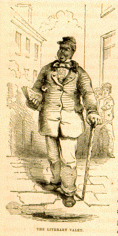
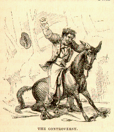
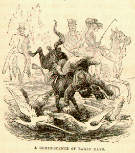
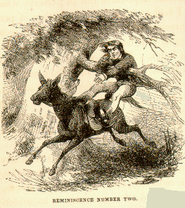

"Certainly not," replied they, in chorus.
"Certainly not," replied they, in chorus.CHAPTER IV: THE LIONS OF STAUNTON
Once more upon the road! The horses, seemingly tired of inglorious ease and golden oats, trotted along at a jolly pace, expressing their satisfaction in alternative snorts; the coachman flourished his whip with such hearty good-will that the fuzz flew at every crack; the girls chattered and sang in a manner betokening the highest exhilaration. Porte Crayon along sat pensive and abstracted. His voice mingled not in the gleeful chorus; and to Mice's frequent exclamations, "Mass' Porte! da's a squirrel; `Mass Porte, da's a crow," he paid no attention.
Presently a light hand tapped him on the shoulder. "Cousin, are you asleep? or what has befallen you?"
"I am not asleep, Cousin Dora, and the cause of my hidden grief can never be made manifest. I fear it is beyond the comprehension of you girls."
"Indeed!" cried they, indignantly; "what unparalleled assumption! as if any secret was beyond our comprehension."
"Pish!" said Fanny, "I would not give a brass thimble to hear one of Porte's secrets I suppose he has lost a favorite lead pencil, or something of equal importance" and, so saying, she looked out of the carriage window with as much nonchalance as she could assume.
"I always did despise secrets," said Dora. "I never read one of those mysterious novels but I turned over the leaves to find out the secret before the characters in the book knew it."
"But, Cousin Porte," said Minnie, with her most winning smile, "it seems to me that, when persons are traveling together, all the joys and sorrows of the trip should be common property, and that it is selfish, or at least ungenerous, for any one to appropriate exclusively either the one or the other."
"So pretty a speech, cousin, deserves a better return that I shall be able to make; for, in truth, like Canning's poor Knifegrinder. I have no secret to tell. Indeed, if I had not been taken off my guard, I should have been tempted to invent one to satisfy you."
"Now," said Minnie, "I suspect you are wishing yourself back in the cave."
"That was a shrewd guess, Miss Minnie, and very near the truth; for I have been ill satisfied with my success in subterranean sketching, and would fain have had a few more trials. But it is just as well as it is, probably, for if I had remained a month, I do not know that I should have succeeded better. When I compare the soul-filling grandeur of the originals with these bits of scratched and smutted paper which I have taken so much pains to elaborate, I begin to feel a sort of contempt for my art."
"Why, brother!" exclaimed Fanny, with warmth, "the drawings are beautiful. We all recognized them. My Moler recognized them. Any one who has seen the cave would recognize them at first sight."
"But, Cousin Porte, you draw portraits so well," said Dora, encouragingly. "I would much rather excel in likenesses than to have a talent for caves."
"Ah! pretty cousin, I failed more ingloriously in sketching you the other day than I have done in the cave."
"Mass' Porte picters off a hoss `mazin good, anyhow; he tuck dis sorrel so pat, I think I see him switching' he's tail."
"Truly," said Crayon, with an air of satisfaction, "a little well-timed self-deprecation has brought me abundance of sympathy and consolation. I feel quite refreshed."
"I'm glad to hear it," said Minnie; "and truly glad, on you account, that we have got away from the cave. I began to be apprehensive lest you might share the fare of a mocking-bird I once hear of."
"What was that? Tell us about the mockingbird."
"Well," said Minnie, "an acquaintance of mine in the lower country had a mocking-bird whose powers of song and mimicking were marvelous, even among the talented race to which he belonged. From his cage, that hung in an upper window, he heard and reproduced, with variations and improvements, the notes of all the feathered tribe, from the chattering of the wren that built her nest beneath the window-sill, to the cooing of the dove that haunted the locust grove. He had even been known to make recognizable attempts at imitating the gobble of a famous turkey-cock that strutted about the yard, and it was universally conceded he could do everything but talk. One unlucky day a smart-looking negro rode up to the house, bearing a note from his mistress to the mocking-bird's mistress. As he tarried at the door for an answer, to pass time he commenced whistling. Now it seems the boy was also a genius in his way. He whistled like a flageolet, and, at all the dancing parties, Christmas revels, or huskings, he was the acknowledged leader of the orchestra - fiddle, bones, and tambourine all playing second to his magnificent whistle. At the first notes which struck his ear the bird's eye sparkled; he raised himself upon his perch, and thus continued spellbound until the strain ceased. His mission finished, the lackey went his way whistling. Then the mocking-bird set himself firmly on his legs, and swelling his throat, began a warble. It was a failure. Again he strove, and again stopped, disgusted and dejected. A third time he gathered up his strength, and poured forth a super-avine trill. He ceased; the white film closed over his eye, and with a shivering flutter of his wings he fell from his perch - dead!"
"Ugh!" said Mice, giving vent to his pent-up feelings, "he bu'st he's heart a-tryin'."
"Poor thing!" said Fanny "I know just how he felt; I heard Jenny Lind once. It was not envy, nor jealousy, nor self- depreciation; but it seemed as if those undefined longings of the soul, those dreams of happiness and perfection, were for a moment about to be realized; then the delusion passes away, and for a while after common life appears intolerable."
"How eloquent she is!" muttered Crayon. "There the genius of song got entirely the upper hand of the practical housekeeper."
"Porte, get out with your nonsense!"
"And," continued Minnie, "suppose that Porte, overcome by his high-wrought feelings, had perished in the cave, and become a great stalagmite, like - like - who! ?
"Niobe, incrusted all over with carbonate of soda -"
"Of lime," interrupted Crayon.
"Or like Lot's wife, a pillar of chloride of something or other."
"A pillar of salt," suggested Dora.
"True enough; so it was. There goes the chemistry!" cried Crayon. "The laboratory will be blown up directly."
"And, as Porte tells us," cried Minnie, "the stalagmite would grow, and grow, and grow, until it reached the roof of the cave, and resemble a tower, which the proprietor, with his usual aptitude in naming would undoubtedly call the Tower of Genius, and which would be admired and wondered at through all time."
"And if such a thing had happened," quoth Crayon, "you, dear cousin, would have wasted away like Echo, until there was nothing left but the tip of your tongue, which, like the soul, I firmly believe, is destined to be everlasting. And, by the grace of fortune! there's Staunton."
"Where? Let us see!" cried they all at once.
The approach to the town of Staunton, by the road from Weyer's Cave, is quite imposing, especially if the view and its surroundings happen to be lighted by a brilliant autumn sunset, as in this instance. On the right, the Asylum for the Deaf and Dumb stands out in bold relief from its background of rich foliage, its Doric portico being one of the best specimens of architecture to be seen in Virginia. On the left are the extensive and commodious buildings for the Insane; and on the surrounding hills a number of pretty edifices academies, seminaries, and private residences exhibiting far more architectural taste than is usually found in the smaller Virginian towns.
As the authorities had not been informed of the approach of our travelers, there was no public demonstration on their entrance into the town. But, in recompense, there was a considerable amount of staring on private account, especially along the colored population. And they flattered themselves, as they descended from their carriage at the door of the principal hotel - Crayon in his hunting costume, and each of the girls with a book in her hand that there was an unusual commotion among the loungers. The idea of making an impression was not altogether ungrateful to our friends, as they well knew that Staunton was renowned all over the State for its cultivated society.
"Hark ye, girls," said Porte Crayon, making an emphatic gesture with his finger, "no doll babies here !"
"Certainly not," replied they, in chorus.
"The idea of carrying the books," pursued he, "is a good one. In connection with my sketching, it gives a superior air to the party, suggestive of the literary tourist, or something of that sort. While I don't admire pretension in any thing, there is a certain modest, yet dignified manner of suggesting, rather than asserting one's claims, that goes far among strangers.
At this discourse Dora appeared really alarmed. "Mercy on us! I hope no one will take me for a literary body. I'm confused at the bare idea. I sha'n't know what to say. I shall be afraid to open my mouth."
"Bless your innocent eyes, Cousin Dimple, don't be alarmed. No one would ever suspect you for a moment. But prattle away in your usual amiable and artless manner, and, believe me, you will be none the less admired."
Here Crayon scrutinized his wards, and then cast an oblique glance at his own figure in the parlor glass. "I don't think," said he, "that a person of ordinary knowledge of the world would be apt to take any of us for literary characters. But we must endeavor to keep up appearances, at any rate."
On the following morning an untoward event occurred which gave great vexation to our friends, and showed that, however plausible Crayon's observations might appear, yet, upon the whole, those are least liable to mortification or misconstruction who live and travel without any pretension whatsoever.
 On sallying forth after breakfast to see the town, the girls in full costume, each with a magazine, and Porte Crayon with his sketch-book, they marched up street in high good-humor. On turning into the principal street, they saw an object that brought them to a halt. This was no other than that marplot scoundrel, Mice, dressed in his holiday suit, with a ruffled shirt of red calico, a June-bug breast-pin, a brass headed cane, like the club of Hercules, and, to crown all, a number of "Harper" under his arm. As he swaggered along at a leisurely pace, his face beaming with exalted complacency, he was an object of general attention. Occasionally he paused to address a condescending question to some "common nigger," to salute some turnaned damsel of his own race in an opposite window, or to cast a look of ineffable satisfaction at his goodly shadow, which entirely overspread the narrow sidewalk.
Crayon is a philosopher (one of a multitudinous and lofty school), who looks on the varying events of life with admirable calmness and equanimity when every thing goes to please him, but who, when disappointed or thwarted, behaves very much like common people; for, as Crayon sagely remarks, "It is not well for any individual to be entirely cut off from human feelings and sympathies." On this occasion, had his coachman been within reach, he would undoubtedly have caned him. As it was, his perception of the ridiculous got the better of his wrath; and venting his feelings in a jumbled paragraph (which he afterward told the girls was a quotation from Furius Bibaculus, the Roman satirist), he turned about and hastened back to the hotel.
"Waiter," said Mr. Crayon, "go into the next street, and when you see a big, foolish-looking negro parading about with a book under his arm, tell him to come down and get out my carriage, as we wish to take a drive."
"Yes sir," replied the grinning waiter. "I know him."
As the streets were very dusty during the remainder of their sojourn in Staunton, our friends generally went out in their carriage.
They were highly gratified by a visit to the Asylum for the Deaf and Dumb, a near approach to which did not disappoint the expectations excited by the distant view. The grounds are already improved with great taste, and, from their peculiarly fortunate location, are susceptible of improvement to an almost unlimited extent. The buildings are extensive, well arranged, and imposing. Our friends took great interest in the exercises of the different classes of deaf mutes, and saw with wonder and delight how the missing faculties seemed, in some cases, to be more than supplied by the ingenious and skillful cultivation of the remainder. An air of cheerfulness and home-like contentment pervaded the whole establishment, and it is not a matter of surprise that the pupils generally leave their Alma Mater with reluctance. While there they are unconscious of misfortune, surrounded by companions and guardians with whom their intercourse is free and unrestrained, and carried on in a language as graceful and expressive as the most cultivated forms of speech. A part of the establishment is devoted to the Blind, a considerable number of whom are at present under instruction.
On the return of our party, the conversation turned upon what they had seen. Minnie May observed that if she had the choice of misfortunes, she would prefer being blind; "Because," said she, "I am naturally fond of talking, and one's friends would read aloud all the new works, and Cousin Fanny would sing for me; and besides, there is a touching interest which attaches itself to the blind, which does not belong at all to the deaf mute. A woman, after all, is a helpless dependent creature; and this misfortune, in rendering her more so, increases in a still greater degree her claims to attention and protection." Fanny agreed to some extent to the foregoing, remarking that the cultivation of music, and the increased susceptibility to its charms, might compensate in some degree for the loss of sight. She appreciated the pleasure of conversation, the fireside in winter, and the veranda in summer, but she was by no means prepared to admit that women were such helpless or dependent creatures. Moreover, she thought a deaf and dumb lady could keep house quite as advantageously as one that had the use of her tongue, and that, upon an average, the servants got along as well without scolding as with it. Dora yawned, and said, for her part, she would be very well contented to remain as she was, but she did think she would like to have little feet, like a Chinese lady.
"Mice," said Crayon, abruptly, "don't you wish you were white?"
"Bless your soul, Mass' Porte, I'se better as I is. I'se a pretty good nigger, but I ain't got sense enough to be white."
The Hospital for the Insane consists of a double range of brick buildings, extensive, elegant, and handsomely located, although its position is not so commanding as that of the Asylum, nor are the grounds about it in so forward a state of improvement. This work, however, is in progress, and will be carried out in a style commensurate with the extent and importance of the institution.
Of the visit of our friends to the interior of the establishment they have never said much. They of course saw the public rooms, the cooking apparatus, and the chapel for the use of the patients, which is furnished with a fine organ, all of which are entirely unexceptionable. Porte Crayon, however, was a good deal vexed with his wards for their persevering curiosity in wishing to see the unfortunate inmates of the Hospital. Having used moral suasion to no purpose, he privately bribed their conductor to tell them that the patients were not permitted to see or to be seen of strangers.
Having thus disposed of the lions of Staunton, our travelers resumed their journey, and, leaving the general direction of their route, took the road to the northwest, toward the Chimneys, some sixteen miles distant. Several miles on their way they passed a man engaged in a controversy with a mule. As the presence of witnesses generally serves to aggravate a quarrel, so, upon the approach of the carriage, both mule and man became more violent in their demonstrations. As well as could be ascertained from their actions, the man wanted to go to Staunton, and the mule seemed willing to go any where else, even preferring the alternative of going backward over a bank ten feet high rather than yield his point. The quarrel growing out of this diversity of opinion or of interest seemed likely to last some time, as the mule was a stout, healthy animal, and the rider a sinewy, long-legged, sun-burned farmer, with a choleric and determined expression of face. The ladies united in desiring Porte Crayon to stop the carriage, that they might see the result of the dispute. This, however, he peremptorily refused to do, alleging as a reason that there was no calculating the time they might lose in waiting, and, besides, that politeness forbade them to be impertinent witnesses of the misfortunes of their neighbors. "Moreover," said he, "judging from the condition of things when he passed, you would most probably overhear, before long, a number of indelicate and profane expressions, improper for female ears."
But Minnie was unwilling to give up the point, and insisted that the poor man might get hurt, and that it would at least be civil to stop and send Mice to his assistance.
"By no means, Cousin. I can appreciate your kind motive, but the man in question probably would not certainly not in his present state of mind. Sympathy, in a case like this, only serves to increase the evil. I know something of these things by personal experience," said Crayon, with a wise wag of his head.
Anon he leaned out from his seat, and looked back with great interest.
 "What's the matter? Can you see him yet?" exclaimed the girls, looking through the peepholes in the back of the carriage. There, indeed, they caught the last glimpse of the unhappy couple, in the same spot where they had first seen them; the mule seated in the middle of the road on his ultimatum, and the rider, burning with rage and grief, standing astride of him, holding on by one ear, and pummeling him lustily with his disengaged fist.
"Well, Cousin Porte, as politeness forbids us to laugh at the unlucky countryman, suppose you amuse us by the recital of some of your adventures the experiences in mule-driving, for example, which you hinted at just now."
"Welladay, girls!" it has been fifteen years or more since I rode one of them, and, to tell the truth, I have never cared to repeat the experiment. On that well remembered occasion I was one of a riding-party, consisting of some eight or ten young people of both sexes, bound for a picnic on top of the North Mountain. When the party assembled at the rendezvous, I appeared mounted on a mule. The girls giggled, as a matter of course, and the men criticised my perverse eccentricity, as they called it. I, however, defended my monture with great vehemence. The ancient kings of Israel rode mules; knights and ladies in the chivalrous ages ambled on mule-back; the great Mohammed rode one; and why should not Porte Crayon bestride the likeness of Alborac? As the little animal trotted along with great sprightliness, I began to get credit for some judgment in my selection, and one youngster, who was mounted on a bone-setter, begged me to exchange with him. This offer, in the pride of my heart, I refused disdainfully. On fording the Tuscarora at the Old Church, we reined up to water our beasts. Alborac junior drank deep of the limpid wave, and, when he had finished, suddenly roached his back, and pitched me plump over his head into the midst of a flock of geese. I remember perfectly well how I felt when I rose out of the water. There was the cursed beast sipping away with the most cheerful and unconcerned expression of countenance, and making no attempt whatever to run away.
 "I hastily swallowed a large gulp of fury and water, and mounted the animal again, endeavoring, at the same time, to appear as little incommoded as was possible under the circumstances. `Ha, ha! ha, ha!' said I, forcing a hearty laugh, `I got a little ducking!' There was no response, but such faces as I could catch a glimpse of appeared all purple with constraint. ' He! he! he!' I snickered again, `I got a funny fall.' No one replied. `What the --- prevents you from laughing?' cried I, in a fury. `Nobody's killed!' A chorus of shouts and shrieks followed, long, loud, and unrestrained. I wouldn't have minded it, but Cousin Julia was there, and that infernal fellow Frank Williams. Cousin Julia could scarcely keep her saddle for laughing; in fact, she laughed all the way to the North Mountain. Every silly, pointless speech furnished occasion for such extravagant and disproportioned merriment, that it was impossible not to perceive what was at the bottom of it. I had at least the satisfaction of perceiving that Frank was as much annoyed with it as I. The creature was in love to that degree that he could neither laugh himself nor endure to see Julia laugh. By the way, I can't imagine a more disgusting condition for any one to be in. They can't appreciate fun in any way, and are totally unfit for general society.
"When we got to the top of the mountain, and were riding along its wooded crest in search of the spot for the view and the picnic, Williams rode beside me. `Crayon,' said he, `I am heartily sorry for your misfortune.'
"I replied, tartly, that I was not aware of having met with any serious misfortune, or of standing in need of any one's sympathy, and especially of his. Frank reddened, and, without more words, rejoined my Cousin. They exhanged a few sentences in an undertone, and presently she whipped up her horse and joined me. "Porte, my dear cousin, you seem to be hurt. Frank - that is, Mr. Williams - did not intend to wound your feelings, and, indeed, I am extremely sorry. `Cousin Julia, stop this stuff. It's bad enough to be thrown by a mule, ducked, and laughed at for an hour and a half without intermission; but to be insulted in this manner, I won't put up with it. As for your Mr. Williams, he shall hear more from me.' And, to cut short the conversation and relieve my excited feelings, I gave my beast two or three sharp whacks across the rump. One would have been enough. He bolted like a shot, and, when I found myself, I was hanging to the limb of a scrub oak, unhorsed, and the breath nearly knocked out of my body. I was so bewildered by this `hey, presto!' movement, that, although I hung only a few feet from the ground, I had not sense enough to get down myself, but was lifted down and set against a tree by one of the party.
"Like the man of Islington's second leap into the quickset hedge, this second mishap, aided by an apologetic glass of toddy brewed by Cousin Julia, entirely restored me to my good-humor, and, by the time the cloth was spread, I felt as well, soul and body, as I did before I ever mounted the accursed mule.
 "`Williams, a word with you.' Frank approached me rather stiffly. We walked toward a laurel thicket a short distance off. I observed Cousin Julia's eyes following us uneasily. `Frank Williams, I have had an unlucky day of it I have been ducked, laughed at, and, finally, hung on the limb of a scrub oak like a scarecrow. I have borne the laugh with reasonable fortitude; but politeness and sympathy, under such circumstances, are beyond human endurance. Let me apologize.' `No,' said Frank, `I must apologize -' `I was ill-tempered,' I insisted. `I was a fool,' said he; and we both laughed until the tears rolled down our cheeks.
"By this time Cousin Julia had joined us. `What are you two laughing at?' inquired she, with evident surprise and pleasure. `Only some funny explanations we've been making,' I replied. `Then, sir, you owe me an explanation for your uncivil haste in riding off when I was talking to you;' and, as she made this allusion, she bit her lips, convulsively striving to avert an approaching paroxysm. `Indeed, Miss Julia, I shall make no explanation whatever to you; you have diverted yourself sufficiently at me and my misfortunes to-day to clear all scores, and leave me still your creditor for a considerable amount; but Frank - oh no, I mean Mr.Williams - is dying to make some explanations to you.' `What do you mean, Porte?' said she, suddenly forgetting her merriment, and blushing scarlet. `Oh ! nothing at all,' I replied, hastening to rejoin the company, and chuckling at my wicked device for stopping Cousin Julia's mirth."
"Well, what became of them ?" asked Minnie, with interest. "Pshaw ! They walked off somewhere, and didn't return until we had eaten up all the dinner. Some of the girls were considerate enough to save them a few sandwiches and a piece of pickle; but they didn't want any thing to eat. Frank, on being rallied about his loss of appetite, did take a sandwich; but, after nibbling a mouthful or two, he quietly slipped the remainder to a pointer dog. However, he did not refuse a thumping swig of toddy; and then, seizing my arm, dragged me off to take a walk with him, and made me the custodier of such a string of mawkish confidences that I returned with the deliberate intention of making him drunk.
"As soon as my cousin laid eyes on us she divined my intentions, and gave me such a look! What an expressive eye Cousin Julia had! Language was really of no use to her, her eyes spoke so handsomely and eloquently; every glance was a paragraph. That look entirely unnerved me; it read thus: `Dear Cousin Porte, can you be so ungenerous as to take advantage of poor Frank's soft condition? You know, when a young gentleman has just been accepted, he is open to any folly or extravagance that may be suggested. Don't do it, for my sake; don't make him drunk.' Having first secured a glass of toddy for myself, to nerve me to the sacrifice, I slyly upset the pitcher on the grass. You may imagine how I was berated and reviled. Dick Spindle, who was already in a state of juvenile exhilaration, expressed his regret that the mule had not broken my neck before I got there. The girls, however, thought the accident was not amiss, and Cousin Julia gave me a look and grateful pressure of the had that was entirely satisfactory."
"And what became of the mule ?" asked Fanny.
"How absent I am. I forgot the mule entirely."
"We all forgot the mule toward the conclusion," said Dora; "and I think, cousin, your mule story was near turning into a love story."
"Bless me! child, what better could I do? The story had to run its course. My hero kicked up and ran away before the story was finished. He left me hanging in a tree with a couple of stupid lovers on my hands. I have got myself out of the tree, disposed of the eatables and drinkables, and left my lovers very happy. What more can any reasonable person ask ?" "I believe, " said Minnie, " that Porte was in love with Cousin Julia himself."
"Is that the only moral you can extract from my story, little humming-bird ?"
"And that Frank married Cousin Julia, of course."
"Frank did," replied Porte Crayon, with a contemptuous shrug of his shoulders. "At that day Frank was a brilliant young man. He had a riding-horse that could out-rack Pegasus, was a jolly sportsman, chock full of adventure, and the life of all dinner parties and dances. Now he is the most commonplace of farmers, growing fat and rich, wearing a broad-brimmed hat and green baize leggins. He rides his old brood mare to town, with a colt trotting after him; has become a squire of the county, and goes to the Legislature. Poor Frank!" sighed Porte Crayon, feelingly, "that he should have sunk to this! And yet he don't seem aware of his degradation: he brags like a Kentuckian. `Vita conjugalis altos et generosos spiritus frangit, et a magnis capitationibus ad humilimas detrahit.'"
{kind=link}
{kind=link}
{kind=link}
{kind=link}